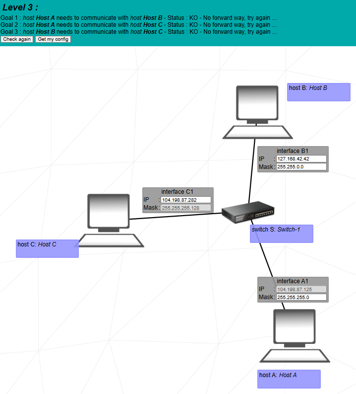
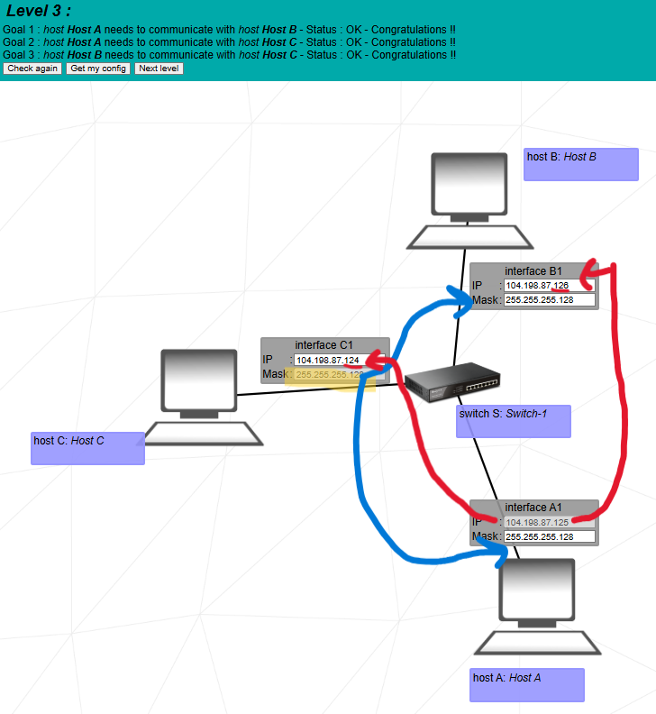

Goal: make hosts A, B, and C communicate on the same switch by putting all three in a single /25 subnet and fixing invalid IPs.


All three machines (A, B, C) are plugged into the same switch. That means: one common LAN, one common subnet mask, and IP addresses in the same network. There is still no routing here, only switching.
104.198.87.125, mask 255.255.255.0 (editable).127.168.42.42, mask 255.255.0.0 (editable).104.198.87.282 (invalid > 255), mask fixed to 255.255.255.128 (/25).So they are in different networks, B uses the 127.x range (loopback-style), and C’s IP is not even valid. Communication obviously fails.
Now A, B, and C are three different hosts in the same /25 subnet 104.198.87.0/25 and can communicate via the switch.
C1’s mask is fixed to /25, so we must use /25 everywhere. For /25:
That subnet has usable range 104.198.87.1 → 104.198.87.126. We just pick
three valid addresses in this range for C, A, and B.
That’s why we completely change B1 and C1 to clean addresses inside
104.198.87.0/25.
The switch floods the frame to all ports. C receives it but the IP does not match, so it prints “packet not for me”. A sees its own packet coming back and prints “loop detected”. B recognizes its own IP and prints “destination IP reached”.
“In Level 3 all three hosts are on the same switch, so they must be in a single LAN. The only mask that is fixed is C’s mask 255.255.255.128, which is /25, so I apply /25 to A and B as well. A’s IP 104.198.87.125 is fixed, so it defines the subnet. With /25 the block size is 128, so A belongs to 104.198.87.0/25, with usable range 104.198.87.1 to 104.198.87.126. I choose 104.198.87.124 for C and 104.198.87.126 for B. Now A, B, and C share the same subnet 104.198.87.0/25, and all pairs A–B, A–C, B–C communicate correctly.”